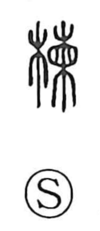

欄

Uncategorized
Kun: | On: ran
column ・ railing ・ balustrade ・ fence ・ animal pen ・ cage ・ well curb
Explanation
A phono-semantic character: the wood element 木 indicates a wooden structure, while 闌 supplies the sound ran and suggests a barrier. Early lexica gloss it as the handrail or balustrade of a building; originally it meant a wooden fence, and by extension it could refer to the wooden enclosures of cages or pens and the cribbing set around a well. Some early sources also write it with the tree name 楝, the ouchi (sendan, Melia azedarach), underscoring its tie to worked wood.